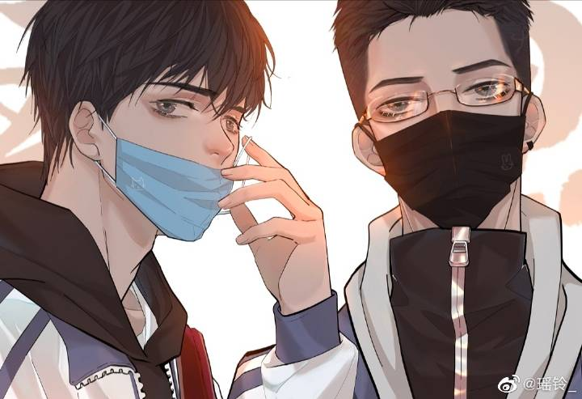

作者：巫哲
内容介绍：一本讲述两位少年相互救赎的故事小说。重点学校的优等生蒋丞因变故被收养家庭退养，
高二转学来到了一个落后混乱的破旧小城市，陌生的环境、粗鄙的父亲、新学校氛围的散漫以及没
有归属的迷茫让这位少年陷入无尽的压抑，直到遇见被原生家庭束缚人生的“钢厂小霸王”顾飞。两
人从开始的互看不顺眼，到相互欣赏，最后成为了彼此生活漩涡中的方舟。一场关于成长、希望和
救赎的故事，到底是怎样在两位少年的身上展开······
蒋丞 顾飞
希望我们都能像对方一样勇敢。
有些意外是意料之中，有些意外是意料之外，而你，就是我意料之外的意外。
日子没劲，就过得特别慢，但凡有那么一点劲，就哗哗的跟瀑布似的拦不住。
有些事也就关起门来自己品，开门走出去，谁也不知道谁背地里有多少不如意，看着都一个鸟样。
你喜欢一个人，看到所有跟他有关的东西，都会变成一团毛球。
人人都在渴望得到，却未必人人都能等到那一份付出。
有些人，会以各种你情愿或者不情愿的方式，留在你的记忆里。
没有谁的生活会一直完美，但无论什么时候，都要看前着前方，满怀希望就会所向披靡。
我就要他，自己走过来，一步一步，不管他用多长时间，他得自己走过来。